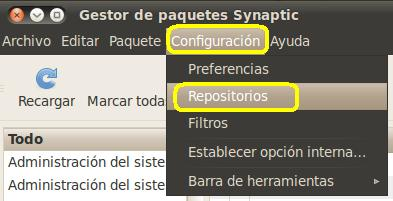
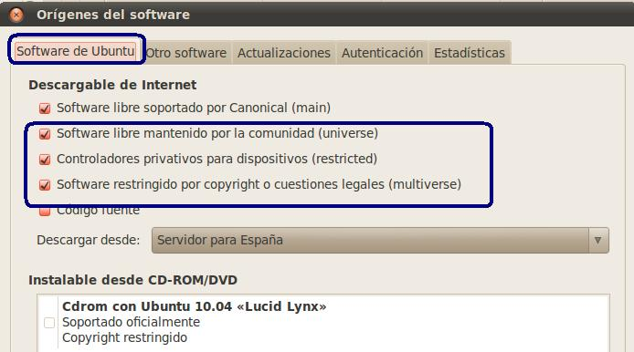
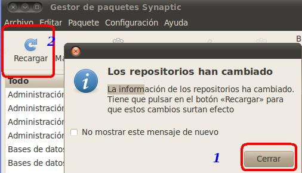
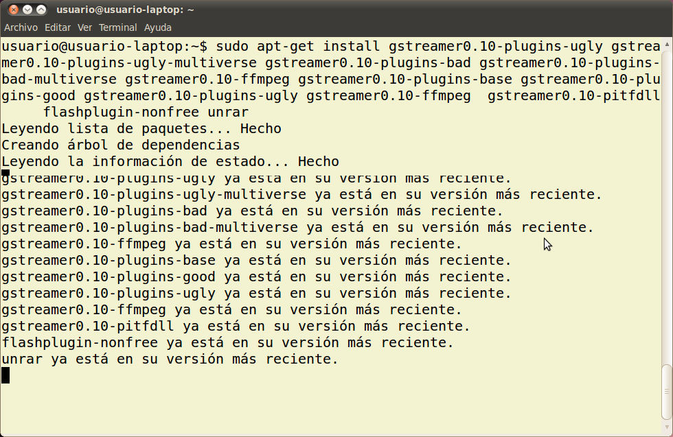

2. Ubuntu - Codecs
En muchas ocasiones descubrimos que nuestro sistema no puede reproducir un determinado video, bien descargado de internet, bien de nuestro reproductor de DVD/CD.
En estos casos el sistema nos indica que le faltan codecs y que procede a instalarlos. En otros casos, debido a que forman parte del Software propietario, el sistema no dispone de dichos paquetes. Es ahí donde tenenos que instalar nuevos repositorios en nuestros sistema para obtenerlos.
La finalidad de este apartado es mostrar como instalar la mayor parte de los códecs necesarios para reproducir la mayor parte de los videos existentes.
| INSTALANDO CODECS (UBUNTU) |
Una forma sencilla de actualizar nuestros códecs1 multimedia en LliureX (Ubuntu):
|
|  |
|

|
|
|

|
|
|

|
Este artículo está licenciado bajo Creative Commons Attribution-NonCommercial-ShareAlike 2.5 License
Jo.R.C.A. 2004 - 2010

Edición de Audio y Video con Software Libre by José Ramón Cerdeira Alonso is licensed under a Creative Commons Reconocimiento-No comercial-Compartir bajo la misma licencia 3.0 España License